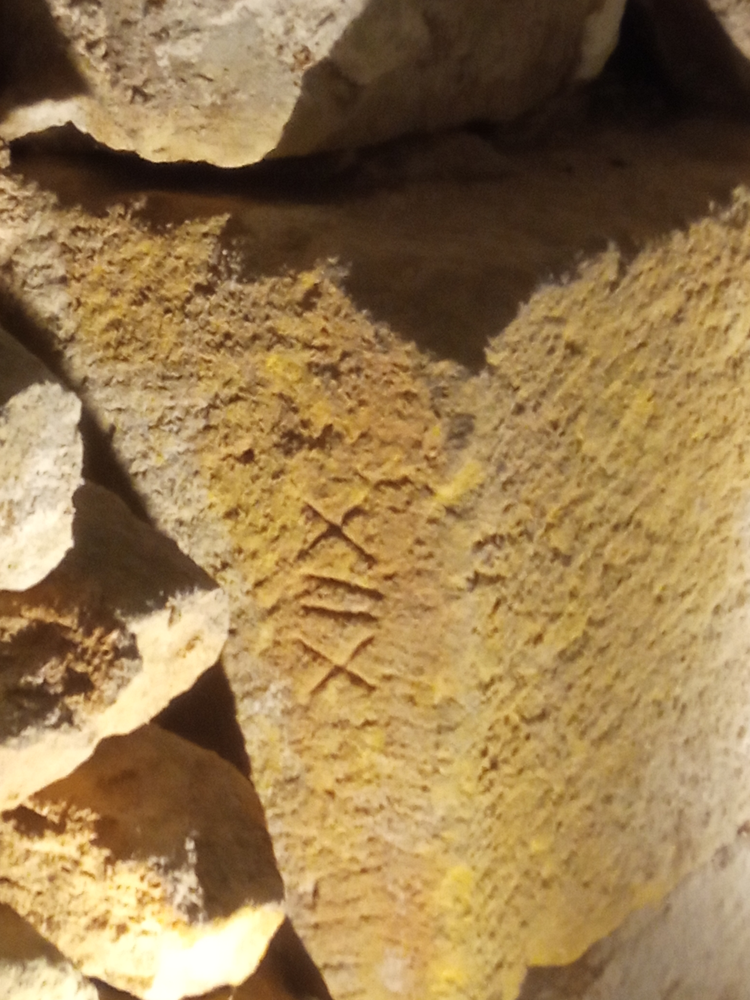
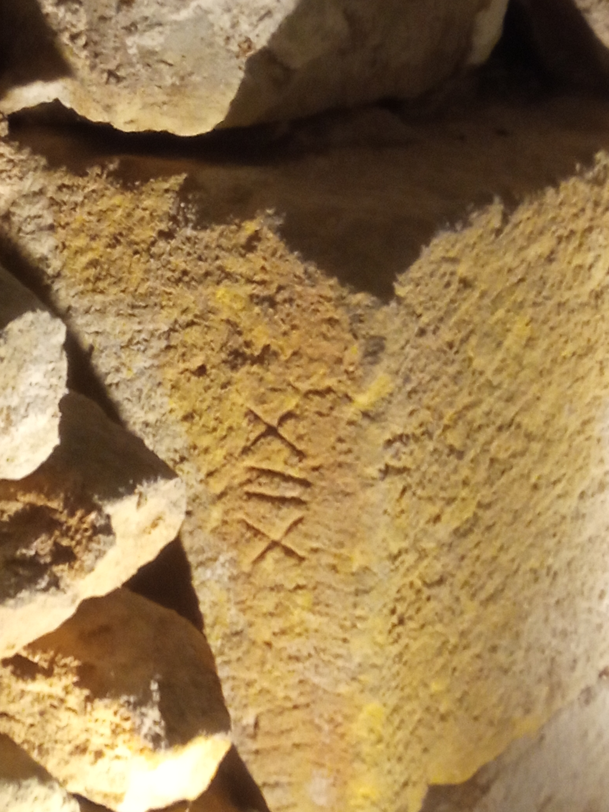

Willkommen in der Großen Synagoge von Barcelona, der ältesten in Sefarad und eine der ältesten in Europa.
IN DEM RAUM DES GRÜNDUNGSSTEINS:
Sie heißt Große Synagoge, da sie die größte und wichtigste der fünf Synagogen Barcelonas war. Die erste Frage, die Sie sich stellen werden, ist, warum sie so klein ist, wenn sie die Große Synagoge genannt wird... Der erste Grund ist, dass es ein Gesetz gab, das den Juden nicht erlaubte, eine Synagoge zu bauen, die höher oder breiter war als die kleinste Kirche in der Stadt. Das zwang sie, sich an diese Regel zu halten, auch wenn es sich um die Haupt-Synagoge handelte.
Der zweite Grund ist, dass wir heute nicht das gesamte Original der Synagoge wiederherstellen konnten. Als sie 1996 gerettet wurde, gehörten diese fehlenden Räume bereits zum benachbarten Restaurant. Obwohl dies eine der vielen noch ausstehenden Wiederherstellungsinitiativen im Call (dem jüdischen Viertel) ist, handelt es sich um eine private Initiative mit begrenzten Ressourcen.
Diese Synagoge wurde durch die Anstrengungen und Hartnäckigkeit von Herrn Miguel Iaffa, unserem Gründer, gerettet. Er war ein katalanischer Jude, der in einem Dorf namens Marçá in Tarragona geboren wurde. Aufgrund der freiwilligen Beteiligung seines Vaters an den Internationalen Brigaden im Kampf gegen die Nazis und der darauf folgenden Diktatur in Argentinien wurde er dort aufgezogen. Miguel kehrte nach Europa zurück, studierte mittelalterliche Geschichte an der Sorbonne in Paris und kam in den 70er Jahren nach Barcelona, um das Viertel zu erkunden und Spuren des jüdischen Erbes zu suchen, zu einer Zeit, als dieses Viertel marginal und gefährlich war.
Er fand diesen Ort unter anderem, weil er eine ungewöhnliche Abweichung an der Hauptfassade feststellen konnte, die dazu führte, dass sie nach Osten ausgerichtet ist und nach Jerusalem schaut, um eine der Regeln für den Bau einer Synagoge, das Kottel Ha’Mizrah, zu erfüllen.
Außerdem konnte er dank einer Veröffentlichung des Historikers Jaume Riera den Ort durch die Entdeckung eines Buches eines Steuereinnehmers in den Archiven der Kathedrale bestimmen, der den Standort der Synagoge festlegte.
Trotz seiner Bemühungen, die Synagoge wiederherzustellen, wurde Miguel Iaffa im Jahr 1996 darauf aufmerksam gemacht, dass das Gebäude zum Verkauf stand und für einen Barbetrieb erworben werden sollte. Das war der Wendepunkt für Miguel, der eine solche Situation nicht zulassen konnte, und er beschloss, das Gebäude zu kaufen und mit archäologischen Arbeiten zu beginnen, um Beweise dafür zu finden, dass hier die Große Synagoge von Barcelona gestanden hatte.
Die erste bedeutende Entdeckung bei den Ausgrabungen waren die beiden Wasserbecken, die Sie hier sehen können. Sie stammen aus dem 15. Jahrhundert und wurden von Jaume d’Arguens und seiner Familie gebaut, die sich 1477 hier niederließen, als dieser Raum nicht mehr als Synagoge genutzt wurde.


Zu diesem Zeitpunkt war das Judentum in der Stadt bereits ausgerottet. Sie blieben als Konvertiten und eröffneten hier ihr Färbereigeschäft. Sie lebten und arbeiteten hier 10 Jahre lang, bis die spanische Inquisition sie 1487 beschuldigte, heimlich Judentum zu praktizieren, und sie zum Verbrennen verurteilte. Die Familie floh nach Frankreich, aber Jaumes Schwiegermutter konnte nicht entkommen und wurde hingerichtet. Das war die letzte jüdische Präsenz an diesem Ort.
Die zweite Entdeckung war die römische Mauer, datiert zwischen dem 3. und 4. Jahrhundert n. Chr. Wir können das Datum am architektonischen Stil der Mauer erkennen, der Opus Africanum ist.
Am Fuß dieser Mauer wurde die wichtigste Entdeckung gemacht: Der Grundstein der Synagoge wurde identifiziert.
 
Wenn Sie sich die Seite anschauen, hat dieser Stein eine römische Zahl gemeißelt. Sie ist mit einem X, zwei Balken und einem weiteren X dargestellt. Diese Zahl, wie sie im 3. Jahrhundert geschrieben wurde, ist heute die Zahl XVIII (X=10 IIX=8).
In der Kabbala bedeutet XVIII "Jay", was auf Hebräisch Leben bedeutet, und wer uns das Leben gibt: Hashem (Gott). Aus diesem Grund wissen wir, dass dieser Raum bereits im 3. Jahrhundert eine Synagoge war.
WECHSELN WIR ZUM RAUM DES ARON HA-KODESH (Schrank, in dem die Tora aufbewahrt wird)
Die jüdische Gemeinde Barcelonas war im Mittelalter sehr groß und wichtig und repräsentierte bis 1391 etwa 15-20% der Bevölkerung der Stadt. Sie lebten in diesem Viertel, das kein Ghetto war, und sprachen Katalanisch.
Dies war auch die Synagoge von RASHBAH, das Akronym für Salomó Ben Adret, einen großen Talmudisten und Großrabbiner von Barcelona, der dort geboren und gestorben ist (1235-1310).
Am 5. August 1391 wurde das Viertel von einem Volksaufstand angegriffen und niedergebrannt: Das Pogrom von Barcelona. Es waren Zeiten der Pest und der Inquisition, und das Gerücht verbreitete sich, dass die Juden weniger von der Pest betroffen seien als die Christen, und das konnte nur bedeuten, dass sie das Wasser vergifteten oder die Heilung hatten und sie nicht mit den Christen teilen wollten. Dies führte zu dem Überfall auf dieses Viertel und diese Synagoge, bei dem mehr als 400 Juden starben und mehr als 3.000 brutal verprügelt und zwangsgetauft wurden.
Ab diesem Zeitpunkt mussten die Juden Barcelonas, die hier seit Generationen gelebt hatten, wählen: Die Region verlassen oder zum Katholizismus konvertieren und von der restlichen Stadt verachtet werden.
Dieses Gerücht war nur eine Ausrede, um eine bereits verachtete Bevölkerung anzugreifen, und die Erklärung, dass sie nicht so stark von der Pest betroffen waren, beruht auf den Normen und Gewohnheiten, die die Juden in Bezug auf persönliche Hygiene hatten, was es ihnen ermöglichte, der Pest besser zu entkommen als den Christen, die in der Regel keine persönliche Hygiene hatten.
Im Jahr 1492 wurde die offizielle Vertreibung der Juden aus Spanien verfügt, aber hier gab es niemanden mehr, den man vertreiben konnte. Sie waren getötet worden, geflohen oder zum Christentum gezwungen worden.
Von diesem Moment an gingen alle jüdischen Güter in den Besitz des Königs über, und nach diesem Ereignis wurde die Große Synagoge einem der Berater des Königs geschenkt und für verschiedene Zwecke vermietet.
In diesem Raum gibt es ein Dokument an der Wand, das eine königliche Genehmigung ist. Das Original befindet sich in den Archiven der Krone von Aragon in Barcelona. In diesem Schreiben autorisiert König Jaume I der Eroberer 1267 die teilweise Wiederherstellung, da die Synagoge weit unter das Straßenniveau gesunken war und die Juden, wie bereits erwähnt, eine königliche Genehmigung für jegliche Arbeit oder Restaurierung in einer Synagoge benötigten.

Die Decke ist eine typische "Volta Catalana", gebaut im 17. Jahrhundert, als die Eigenschaft in zwei geteilt wurde und ein Jahr später für den Bau des aktuellen Gebäudes über der Synagoge gebaut wurde.
In diesem Raum finden Sie auch eine wichtige Sammlung von Judaika-Objekten.
Besondere Erwähnung verdient die Tora im Aron Kodesh, geschrieben im 16. Jahrhundert und gespendet von einer Familie aus New York, den Rozenwaigs.
Die Tora in der Vitrine ist nicht koscher, da ihr Teile fehlen. Sie stammt aus dem 18. Jahrhundert und wurde auf einem Flohmarkt in Marokko gefunden und von einem katalanischen Sammler, Joaquim Oller, gespendet.
Die Truhe ist die Mitgift einer Braut, die einer jüdischen Familie aus Barcelona gehörte und aus dem 17. Jahrhundert stammt.
Die Menora (Leuchter) ist das Werk eines Künstlers aus Mallorca namens Ferrán Aguiló, der einer der fünfzehn jüdischen Familien ist, die noch in der Kathedrale von Mallorca registriert sind und die die obligatorische Inquisition und Konversion durchlaufen haben. Er konvertierte zum Judentum zurück und spendete die Menora zum Gedenken an seine Vorfahren, die als "xuetas" (der Name für Juden auf der Insel Mallorca) bezeichnet wurden.
Die Sammlung der Zinnplatten stammt nicht nur aus Spanien. Sie ist eine besondere Spende von Herrn Alex Neish, einem schottischen Anglikaner, der kein Jude ist, aber einer der größten Zinnsammler ist und sie an einen Ort spenden wollte, der eine besondere Bedeutung hat. Er spendete einen Teil seiner Sammlung, als er erfuhr, dass die Große Synagoge von Barcelona wiederhergestellt wurde.
Auch die private Sammlung der Familie Iaffa befindet sich in der Synagoge und umfasst verschiedene Stücke der jüdischen Kultur.
Das Bleiglasfenster ist das Werk von Máximo Iaffa, dem Bruder von Miguel Iaffa. Der Davidstern ist in den Farben der zwölf Stämme Israels gehalten. Die Botschaft: Selbst zerbrochene Glasstücke können wieder zusammengefügt werden.
Derzeit erfüllt die Synagoge eine wichtige Funktion als Zentrum für die Verbreitung der jüdischen Kultur und Geschichte in Sefarad für alle Besucher, unabhängig von ihrer Religion.
Miguel Iaffa kaufte dieses Gebäude 1996 und schaffte es, es 2002 nach 6 Jahren harter Arbeit, Hingabe und eigenen Ressourcen wiederzueröffnen.
Im Jahr 2016 verstarb Miguel, und seine Kinder, Saul und Ruth, die ihm bei der Wiederherstellung halfen, setzen sein Erbe fort und arbeiten daran, die Geschichte und Kultur der Juden in diesem Land weiterhin wiederherzustellen.